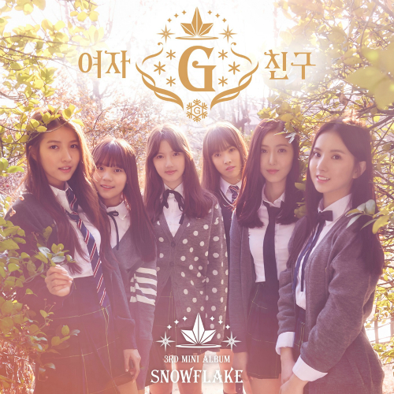

박주완 Juwan Park
이 문서는 제이쿼리를 이용하여 무지개색 링크와 스크롤에 따른 색 변화를 구현하였습니다.
국민교육헌장
우리는 민족 중흥의 역사적 사명을 띠고 이 땅에 태어났다. 조상의 빛난 얼을 오늘에 되살려, 안으로 자주독립의 자세를 확립하고, 밖으로 인류 공영에 이바지할 때다. 이에, 우리의 나아갈 바를 밝혀 교육의 지표로 삼는다.
성실한 마음과 튼튼한 몸으로, 학문과 기술을 배우고 익히며, 타고난 저마다의 소질을 계발하고, 우리의 처지를 약진의 발판으로 삼아, 창조의 힘과 개척의 정신을 기른다. 공익과 질서를 앞세우며 능률과 실질을 숭상하고, 경애와 신의에 뿌리박은 상부상조의 전통을 이어받아, 명랑하고 따뜻한 협동 정신을 북돋운다. 우리의 창의와 협력을 바탕으로 나라가 발전하며, 나라의 융성이 나의 발전의 근본임을 깨달아, 자유와 권리에 따르는 책임과 의무를 다하며, 스스로 국가 건설에 참여하고 봉사하는 국민 정신을 드높인다.
반공 민주 정신에 투철한 애국 애족이 우리의 삶의 길이며, 자유 세계의 이상을 실현하는 기반이다. 길이 후손에 물려줄 영광된 통일 조국의 앞날을 내다보며, 신념과 긍지를 지닌 근면한 국민으로서, 민족의 슬기를 모아 줄기찬 노력으로, 새 역사를 창조하자.

여자친구 - 시간을 달려서
다가서지 못하고 헤매이고 있어
좋아하지만 다른 곳을 보고 있어
가까워지려고 하면 할수록
멀어져 가는 우리 둘의 마음처럼
만나지 못해 맴돌고 있어
우린 마치 평행선처럼
말도 안 돼 우린 반드시 만날 거야
기다릴게 언제까지나
미처 말하지 못했어 다만 너를 좋아했어
어린 날의 꿈처럼 마치 기적처럼
시간을 달려서 어른이 될 수만 있다면
거친 세상 속에서 손을 잡아 줄게
다가서려 해 봐도 엇갈리고 있어
좋아한단 말도 아직 못하고 있어
머뭇거리는 널 보고 있으면
우린 아직도 많이 어리긴 한가 봐
좁혀지지 않아 한 끗 차이
우린 마치 평행선처럼
언젠가는 못다 한 말을 전할 거야
다가갈게 언제까지나
미처 말하지 못했어 다만 너를 좋아했어
어린 날의 꿈처럼 마치 기적처럼
시간을 달려서 어른이 될 수만 있다면
거친 세상 속에서 손을 잡아 줄게
시간 속에 갇혀 길을 헤매여도
그렇지만 우린 결국 만날 거야
진심인 것만 알아 줘 정말
서툴기만 한대도
미처 말하지 못했어 다만 너를 좋아했어
어린 날의 꿈처럼 마치 기적처럼
시간을 달려서 어른이 될 수만 있다면
거친 세상 속에서 너를 안아 줄게
이거 하나만 약속해 변치 않기를 바랄게
그때도 지금처럼 날 향해 웃어 줘
시간이 흘러서 어른이 될 수만 있다면
엇갈림 그 속에서 손을 잡아 줄게
소나기 결말
개울물은 날로 여물어 갔다.
소년은 갈림길에서 아랫 쪽으로 가 보았다. 갈밭 머리에서 바라보는 서당골 마을은 쪽빛 하늘 아래 한결 가까워 보였다.
어른들의 말이, 내일 소녀네가 양평읍으로 이사 간다는 것이었다. 거기 가서는 조고마한 가겟방을 보게 되리라는 것이었다.
소년은 저도 모르게 주머니 속 호두알을 만지작 거리며, 한 손으로는 수없이 갈꽃을 휘어 꺾고 있었다.
그날 밤, 소년은 자리에 누워서도 같은 생각뿐이었다. 내일 소녀네가 이사하는 걸 가 보나 어쩌나, 가면 소녀를 보게 될까 어떨까.
그러다가 까무룩 잠이 들었는가 하는데,
｢허, 참, 세상일두 …… ｣
마을 갔던 아버지가 언제 돌아왔는지,
｢윤초시 댁두 말이 아니어. 그 많든 전답을 다 팔아 버리구, 대대루 살아오든 집마저 남의 손에 넘기드니, 똑 악상꺼지 당하는 걸 보면 …… ｣
｢그렇지. 사내가 둘 있든건 어려서 잃어 버리구 …… ｣
｢어쩌믄 그렇게 자식 복이 없을까.｣
｢글쎄 말이지. 이번 앤 꽤 여러날 앓는걸 약두 변변히 못써 봤다드군. 지금 같아서는 윤초시네두 대가 끊긴 셈이지……. 그런데 참 이번 기집애는 어린 것이 여간 잔망스럽지가 않어. 글쎄 죽기 전에 이런 말을 했다지? 자기가 죽거든 자기 입든 옷을 꼭 그대로 입혀서 묻어 달라구…….｣